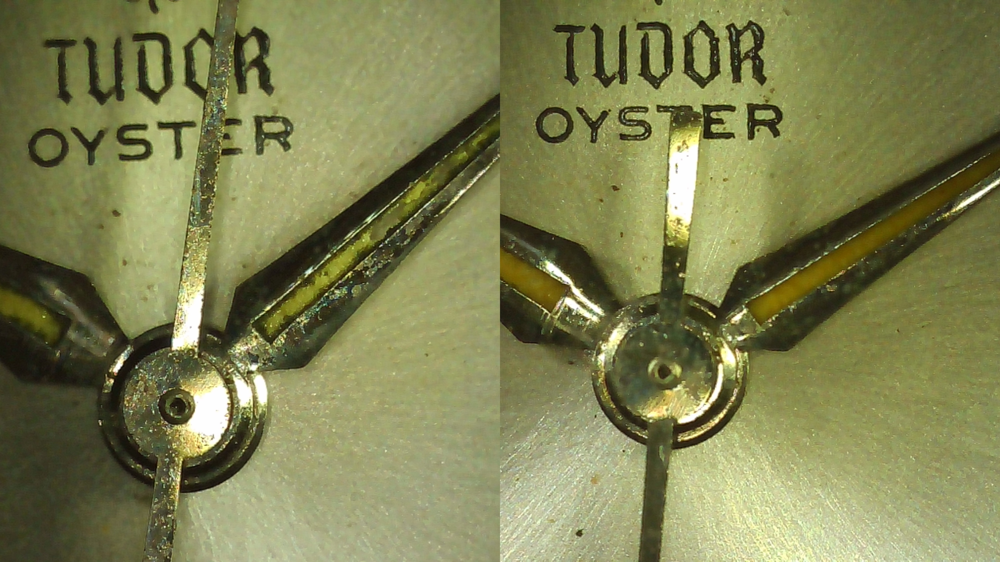

Welcome!
Welcome to A Watch Mechanic. This is my website where I showcase my work and provide information about my watchmaking services.
Feel free to browse the gallery of my work, learn not only about me and my services, but also about the stories behind the watches that I restore.
View My WorkWhat I Do

Servicing
Complete servicing of mechanical watch movements to restore reliable and accurate operation.

Restoration
Bringing vintage and worn timepieces back to life while preserving their character.


Have a Watch That Needs Attention?
Get in touch to discuss your watch and what it may need.
Contact Me